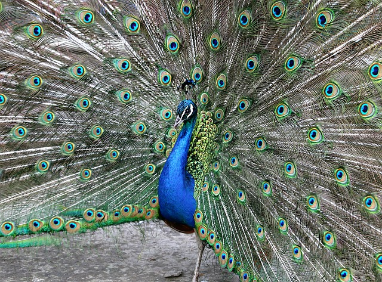

Blue is also a word used to convey some key emotions.
Blue is often used to describe the emotion for feeling very sad or down.
An example of this is "she's feeling so down, she's blue."
Blue can be tranquil and hypnotic such as the gentle rolling of waves in the ocean.
Or it can convey a feeling of joy such as the "Bluebird of Happiness", or a majestic peacock.
Felecia Gordon, July 2016